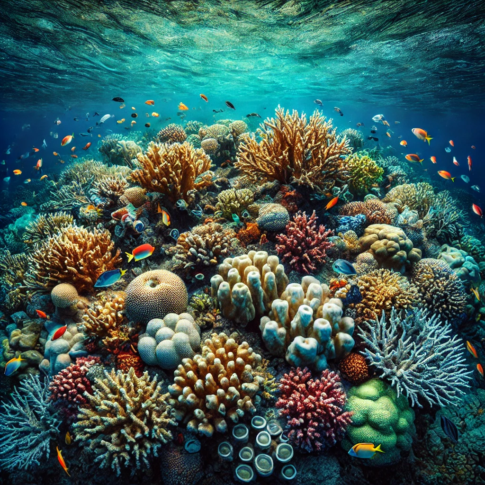

الشعاب المرجانية

ما هي الشعاب المرجانية؟
الشعاب المرجانية هي هياكل طبيعية تحت الماء تتكون من مستعمرات الكائنات الحية المعروفة باسم بوليبات المرجان. تقوم هذه الكائنات بإفراز كربونات الكالسيوم لبناء هياكل صلبة توفر موطنًا للكثير من الكائنات البحرية.
أهمية الشعاب المرجانية
- تُعد موطنًا لمجموعة متنوعة من الكائنات البحرية، مما يعزز التنوع البيولوجي.
- تحمي السواحل من التآكل عبر تخفيف قوة الأمواج.
- تدعم الاقتصاد المحلي من خلال الصيد والسياحة.
- تلعب دورًا في تنظيم مستويات الكربون والحفاظ على صحة المحيطات.
العوامل المؤثرة في الشعاب المرجانية
- ارتفاع درجة حرارة المياه بسبب تغير المناخ.
- التلوث البحري مثل تسرب النفط والنفايات البلاستيكية.
- الصيد الجائر واستخدام أدوات صيد مدمرة.
- الأنشطة البشرية مثل البناء الساحلي والتعدين.
أنواع الشعاب المرجانية
- الشعاب الحلقية: تتخذ شكل حلقات وتحيط بجزر أو بحيرات.
- الشعاب الهامشية: تنمو بالقرب من السواحل.
- الشعاب الحاجزية: تفصلها عن اليابسة بحيرات ضحلة.
ظاهرة تبييض الشعاب المرجانية
تحدث ظاهرة تبييض الشعاب المرجانية عندما تتعرض لضغط بيئي مثل ارتفاع درجة حرارة المياه، مما يؤدي إلى طرد الطحالب التكافلية التي تمنحها اللون والحياة. نتيجة لذلك، تفقد الشعاب ألوانها وتصبح بيضاء، مما يهدد بقاءها.
كيفية حماية الشعاب المرجانية
- تقليل الانبعاثات الكربونية للحد من تغير المناخ.
- منع التلوث البحري عن طريق التخلص الآمن من النفايات.
- تنظيم أنشطة الصيد ومنع الصيد الجائر.
- زيادة الوعي بأهمية الشعاب المرجانية والحفاظ عليها.
- إنشاء محميات بحرية لحماية النظم البيئية.